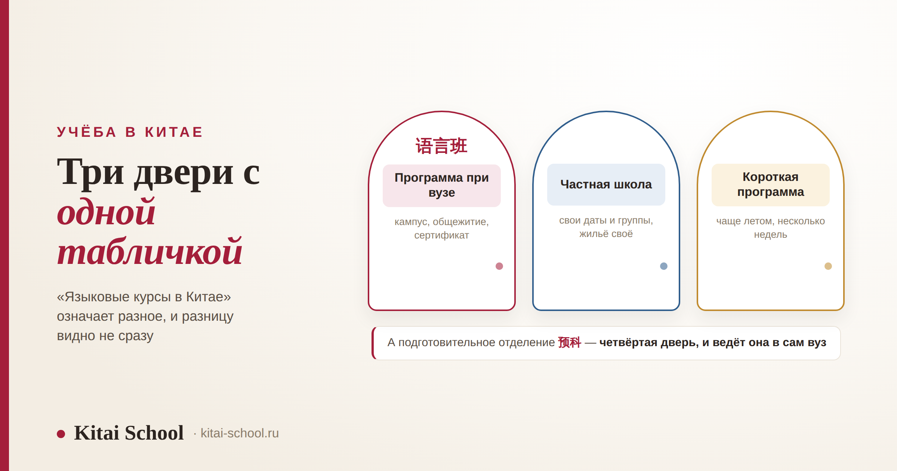
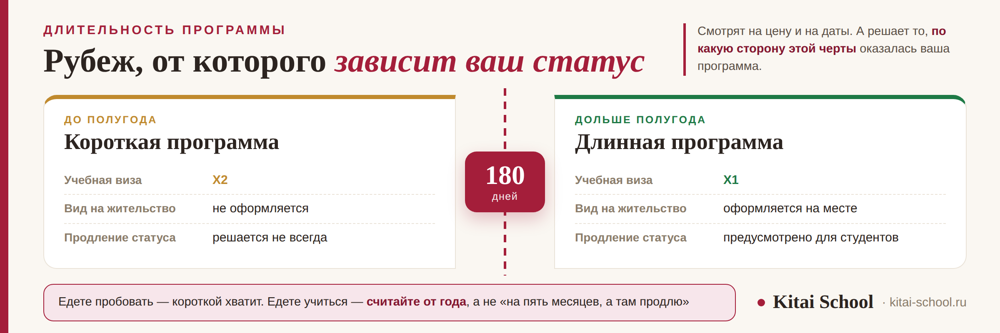

Учёба в Китае
Языковые курсы в Китае: какие бывают, что решает граница в полгода и с каким уровнем ехать


Под словами «языковые курсы в Китае» лежат три разные вещи, и цена ошибки здесь измеряется не деньгами, а годом жизни. А ещё есть четвёртая, которую в эту кучу кладут чаще всего, — подготовительное отделение вуза, и вот оно языковыми курсами как раз не является. Начнём с того, что есть что, потом разберём рубеж, от которого зависит ваш статус в стране, и закончим тем, на что смотреть при выборе. Без обещания, что Китай научит языку сам.
Подготовительное отделение 预科 и языковые курсы 语言班 — не одно и то же: первое ведёт в программу конкретного вуза, второе не ведёт никуда, и это нормально, если знать заранее. Сто восемьдесят дней — рубеж: до него виза X2 без вида на жительство, дольше — X1 и полноценный студенческий статус. Ехать с нуля дорого: первые месяцы уйдут на пиньинь и тоны, а они одинаково ставятся где угодно. И главное: заговорить заставляет не страна, а необходимость — если вокруг говорят по-русски, вы будете говорить по-русски.
Три разные вещи под одним названием
Первое, что стоит сделать, — понять, о чём именно идёт речь в конкретном предложении. Форматы отличаются не качеством, а тем, что вы получаете на выходе.
| Формат | Как устроено | Что на выходе |
|---|---|---|
| Языковая программа при вузе 语言班 |
семестр или год на кампусе, группы по уровням, общежитие вуза | сертификат об окончании; в основную программу вуза он автоматически не ведёт |
| Частная языковая школа | своё расписание и свои группы, жильё обычно ищете сами | сертификат школы; гибче по датам, но статус студента вуза не даёт |
| Короткая программа | несколько недель, часто летом, с культурной частью | опыт и среда; для заметного роста уровня срок мал |
| Подготовительное отделение 预科 |
язык плюс базовые предметы под будущее направление | вход в основную программу этого вуза по правилам приёма |
Последняя строка — не языковые курсы, и путают её чаще всего. Разница в одном: у подготовительного отделения есть прописанный переход в программу вуза, а у языковых курсов его нет. Формулировка «после курсов поступите к нам» в переписке ничего не значит — значит только положение о приёме. Эта развилка со всеми подробностями разобрана в статье про бакалавриат в Китае, там же личная история о том, как семья потеряла на этой путанице год.
Сто восемьдесят дней: рубеж, который решает больше всего
Это самая важная цифра во всей теме, и на неё почти не смотрят при выборе программы. От длительности зависит не только цена — от неё зависит, в каком качестве вы находитесь в стране.
| Что | Программа до полугода | Программа дольше полугода |
|---|---|---|
| Учебная виза | X2 | X1 |
| Вид на жительство | не оформляется | оформляется в Китае после приезда |
| Приглашение от вуза | письмо о зачислении | письмо о зачислении и форма JW |
| Медосмотр | требования зависят от программы | проходится на месте, нужен для вида на жительство |
| Продление и смена статуса | отдельный вопрос, решается не всегда | предусмотрено правилами для студентов |
Практический вывод из этой таблицы такой: если вы едете пробовать — короткая программа подходит, если вы едете учиться — считайте от года. Промежуточный вариант «на пять месяцев, а там продлю» выглядит экономным, а на деле упирается в то, что продление по короткой визе предусмотрено не всегда и зависит от конкретного случая.
Сроки, формы и порядок оформления меняются, и проверять их нужно на своём году и для своей программы — на сайте вуза и на сайте консульского учреждения. Общая картина этапов поступления и документов есть в разборе как поступить в Китай на бюджет, а из чего вообще состоит статус иностранного студента — в статье про дистанционное обучение в Китае.

Критерий, о котором не пишут в описаниях
В рекламе программ сравнивают часы, преподавателей и кампус. А решает чаще всего другое — кто вокруг вас говорит.
Если группа собрана из носителей одного языка, между собой вы будете общаться на нём. Это не слабость характера, а нормальное поведение: люди выбирают тот язык, на котором понимают друг друга быстрее. И тогда китайский остаётся внутри занятий, а всё остальное время идёт мимо.
| Вопрос | Что показывает ответ |
|---|---|
| Какой состав групп по странам? | будете ли вы вынуждены говорить по-китайски вне занятий |
| Сколько человек в группе? | сколько минут на занятии говорите лично вы |
| Есть ли устная речь отдельным предметом? | или она растворена в общих занятиях и до неё не доходит |
| Как распределены часы по навыкам? | не уйдёт ли большая часть на письмо и чтение |
| Есть ли занятия вне кампуса? | выходит ли программа в город или всё происходит в аудитории |
| Кто соседи в общежитии? | вечер — это половина вашего дня, и он решает не меньше занятий |
Про «пассивное переписывание иероглифов» отдельно, потому что этого боятся заранее. Прописывать знаки нужно, но это домашняя работа, а не то, за чем едут в Китай. Если в расписании программы значительная часть аудиторных часов уходит на переписывание, вы платите за самое дешёвое занятие по самой дорогой цене. Как устроен разбор речи и почему барьер не про уровень — в статье про курс по разговорной речи; что даёт группа и чего не даёт — в разборе групповые занятия по китайскому.
Ко мне обратилась девушка, которая отучилась в Китае год на языковой программе и вернулась расстроенной. Она рассчитывала, что за год заговорит свободно, а вышло, что понимает много, а говорит с трудом и по заученному.
Стали разбирать, как проходил её день. Занятия с утра, дальше обед с однокурсницами — обе из России. Вечером общежитие, соседка тоже русскоязычная. Магазин и доставка — через приложение, там говорить не нужно вообще. Получалось, что за пределами четырёх часов занятий китайский в её дне почти не встречался. Год в Китае — и разговорной практики меньше, чем у моих студентов, которые занимаются из дома дважды в неделю.
Мы не стали переучивать заново, взяли только речь. Но с тех пор я всем, кто собирается, задаю один вопрос заранее: что в вашем дне будет заставлять вас говорить по-китайски? Если ответа нет, его нужно придумать до поездки, а не надеяться, что он появится сам.
С каким уровнем ехать и почему с нуля дорого
Здесь стоит посчитать, а не решать на ощущении. Дорого в этой поездке стоит не обучение — дорого стоит месяц жизни в Китае. И вопрос не «сколько стоит курс», а на что уйдут эти оплаченные месяцы.
С полного нуля первые месяцы уйдут на пиньинь, четыре тона и первые сотни знаков. Это ровно та часть пути, которую одинаково хорошо проходят где угодно: тоны ставятся по записи и обратной связи, знаки разбираются по составу, и ни для того, ни для другого не нужно находиться в Китае. Получается, что самые дорогие месяцы тратятся на самое переносимое.
| Что | Где это делается лучше |
|---|---|
| Пиньинь и четыре тона | до поездки: нужны запись, разбор и повторение, а не среда |
| Первые сотни знаков | до поездки: это работа с составом знака и регулярность |
| Базовая грамматика | до поездки: объяснение на понятном языке экономит недели |
| Скорость реакции в разговоре | на месте: нужен живой собеседник, который не ждёт |
| Понимание на слух в шуме | на месте: улица, магазин, объявления, чужие акценты |
| Бытовой язык и уверенность | на месте: его негде взять из учебника |
Ориентир, который экономит больше всего: ехать имеет смысл тогда, когда вам уже есть чем пользоваться. Не «когда выучу», а когда набрана база, на которую в среде наращивается речь. Сколько времени занимает эта база — в разборе за какое время реально выучить китайский; с чего она начинается — в статье про изучение китайского с нуля; тоны и звуки — в разборе корректировка произношения.
Из чего складывается стоимость
Точных сумм здесь не будет, и это осознанно: они зависят от вуза, города и года, а цифры из интернета устаревают быстрее, чем публикуются. Полезнее держать в голове структуру расходов, чтобы ни одна строчка не оказалась сюрпризом.
| Статья | Что учесть |
|---|---|
| Обучение | зависит от вуза и города; смотрите страницу своей программы, а не сводные таблицы |
| Проживание | общежитие обычно дешевле съёмного жилья, но мест не всегда хватает |
| Медицинская страховка | для учебной визы обязательна, оформляется по правилам принимающей стороны |
| Виза и оформление | консульский сбор, подача, а для длинных программ — ещё и вид на жительство на месте |
| Приезд и первые недели | перелёт, медосмотр, регистрация, банковская карта, симкарта |
| Жизнь | еда, транспорт, быт — по ним есть отдельный разбор цен |
Две вещи, которые стоит помнить про деньги. Первая: расходы до подачи не возвращаются — переводы, справки, сборы тратятся независимо от результата. Вторая: первые недели на месте идут на свои, даже если программа оплачена. Обе разобраны в статье про бесплатное образование в Китае, а реальные цены на еду, транспорт и жильё — в разборе дорого ли в Китае. Стипендии на языковые программы бывают, но реже и на других условиях, чем на степени, — это в статье про стипендии в Китае.
Частые вопросы (FAQ)
Чем языковые курсы при вузе отличаются от подготовительного отделения?
Это разные вещи, и путаница здесь стоит года. Языковые курсы (语言班) учат только языку и никуда автоматически не ведут: закончили — и всё, дальше поступаете на общих основаниях. Подготовительное отделение (预科) — это вход в основную программу конкретного вуза, там кроме языка есть базовые предметы под будущее направление, а условия перехода прописаны в правилах приёма. Если вам обещают «после курсов поступите к нам», просите документ вуза, а не письмо менеджера. Подробно эта развилка разобрана в разборе про бакалавриат в Китае.
Что меняется на границе в сто восемьдесят дней?
Почти всё, что касается вашего статуса. Для программ длиннее этого срока оформляют учебную визу категории X1, и уже в Китае по ней получают вид на жительство — то есть вы становитесь полноценным студентом с документом, который позволяет жить в стране. Для коротких программ выдают визу X2, вид на жительство по ней не оформляют, и продление или смена статуса — отдельный вопрос, который решается не всегда. Поэтому длительность программы выбирают не только по деньгам и желанию: она определяет, в каком качестве вы находитесь в стране.
С каким уровнем китайского разумно ехать на курсы в Китай?
С каким-то уже имеющимся. Ехать с полного нуля можно, но дорого: первые месяцы уйдут на пиньинь, четыре тона и первые сотни знаков, а это ровно та часть, которую одинаково хорошо ставят где угодно, включая занятия из дома. В Китае дорого стоит не обучение само по себе, а месяц жизни там. Разумный подход такой: базу и произношение набрать заранее, а поездку потратить на то, ради чего туда и едут — на речь, скорость и среду.
Правда ли, что в Китае заговоришь автоматически?
Нет, и это главное разочарование тех, кто съездил. Заговорить заставляет не страна, а необходимость: если в группе и общежитии вокруг вас говорят по-русски, вы будете говорить по-русски, а китайский останется на четыре часа занятий в день. Люди годами живут в Китае с бытовым уровнем именно поэтому. Поэтому состав группы и то, чем вы заняты после занятий, для результата важнее рекламного описания программы.
Сколько стоят языковые курсы в Китае?
Конкретных сумм мы здесь намеренно не приводим: они зависят от вуза, города и года, а цифры из интернета устаревают быстрее, чем публикуются. Полезнее держать в голове структуру расходов: обучение, проживание, обязательная медицинская страховка, консульский сбор и оформление визы, перелёт, медосмотр и оформление на месте, плюс жизнь — еда, транспорт, быт. Единственный надёжный источник по обучению и общежитию — страница вашей программы на сайте самого вуза.
Можно ли учить китайский в Китае без знания английского?
Да, на языковых программах обучение обычно идёт на китайском с самого начала, через наглядность и постепенное усложнение, а не через язык-посредник. Английский пригодится в быту и в общении с другими иностранными студентами, но требованием программы он, как правило, не является. Требования конкретной программы всё равно проверяйте на сайте вуза: они различаются.
Собираетесь на языковую программу и не знаете, с каким уровнем ехать? На диагностическом занятии посмотрим, где вы сейчас, и посчитаем, что разумно закрыть до поездки, чтобы месяцы в Китае ушли на речь, а не на пиньинь. Оставить заявку или написать в Telegram.
Дальше по теме: подготовительное отделение и ступень бакалавриата — бакалавриат в Китае; статус студента и что доступно удалённо — дистанционное обучение в Китае; этапы поступления и документы — как поступить в Китай на бюджет; стипендии — стипендии в Китае; сколько своих денег понадобится — бесплатное образование в Китае; цены на месте — дорого ли в Китае; с чего начать язык — изучение китайского с нуля; сроки до уровня — за какое время реально выучить китайский; речь и барьер — курс по разговорной речи; ступень языка — HSK 4.
Источники
- Практика Kitai School — подготовка студентов к языковым программам в Китае и работа с теми, кто вернулся.
- Правила приёма и страницы языковых программ китайских вузов — состав программы, сроки и стоимость публикуются на каждый учебный год.
- Порядок оформления учебных виз и вида на жительство — категории и требования уточняются на своём году в консульском учреждении.
Пусть поездка даст именно то, ради чего вы едете! 读万卷书，行万里路！